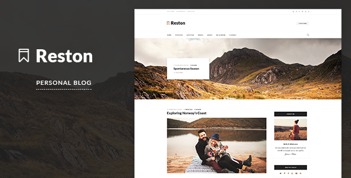

Reston - Personal Blog PSD Template
Created by Wplobi
- created: July 18, 2016
- latest update: July 18, 2016
- by: Wplobi
Thank you for purchasing my template. If you have any questions, please feel free to contact me via the contact form on my profile page.
Reston - Personal Blog PSD Template
Reston is a clean and elegant blog template, created for those who like to travel and know how to promot most interesting media. Reston include all popular features that will help you in your storytelling.

- Elegant Post Formats
- Eye-catching Typography
- Custom Grid System
- Pixel Perfect
- Easy to Customize
- Fully Layered and Organized PSD File
- Free Google Web Fonts
- 01_Home.psd
- 02_Home.psd
- 03_Home.psd
- 04_Standart_Post.psd
- 05_Full_Width_Post.psd
- 06_Gallery_Post.psd
- 07_Link_Post.psd
- 08_About.psd
- 09_Contact.psd
- 10_Drop_Down_Menu.psd
- 11_Mega_Menu.psd
In order to edit the file, you need to have Adobe Photoshop installed on your system, and the fonts mentioned in the credits installed.
As you can see on the right, the layers are well organized and gropued into folders, which make editing very easy.
So, all you have to do, is select the layer from the right, and then edit it with Adobe Photoshop.
That's all! Enjoy.
Fonts Used
You need to install these fonts below before editing the PSD files
Icons Used
Graphics Used
Many thanks for these great images to:
Note: All images are just used for Preview Purpose Only. They are not part of the template and NOT included in the final purchase files.